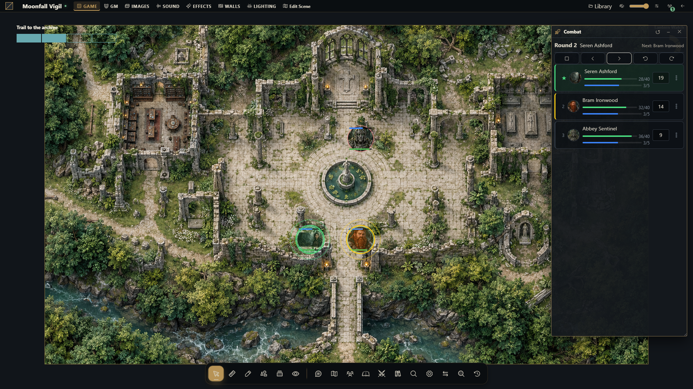

Encounters, initiative and turns
Set up a scene encounter and advance turns with the campaign system in mind.


Prepare an encounter
Combat is associated with a scene. The host provides an encounter tracker; the selected RPG system can supply initiative configuration and rule-specific behavior. Do not assume every system has the same initiative formula, effects or resources.
As GM, open the intended scene and the combat tracker.
Add the participating tokens or actors. Scene tokens must belong to that scene.
Configure the supported initiative input/formula, or enter initiative values manually.
Roll initiative for the intended scope where a formula is available, then inspect the order.
Set hidden or defeated flags as needed and start the encounter.
Advance turns and rounds using the tracker. Stop the encounter when it is over.
An encounter supports up to 64 combatants. Starting requires at least one; rolling initiative requires a configured formula.
Share turn responsibility
The GM manages order, combatants and encounter configuration. A player can advance the current turn only when the encounter is active and they control its current combatant. A visible combatant is not necessarily controlled by that account.
Defeated combatants are skipped during normal advancement. If every combatant is defeated, there is no eligible next combatant. Adding or reordering entries should not be used as a substitute for selecting the intended current turn.
Effects and previous turns
Effects and conditions may advance at turn/round boundaries according to their system and configuration. Returning to a previous turn changes tracker history; it is not a general undo of all rule automation or resource changes already committed. Inspect affected sheets when correcting a mistaken advancement.
Troubleshoot
If initiative cannot roll, check the system's formula and required sheet values. If a player cannot end their turn, check token/actor control and the currently selected combatant. If combat appears absent after switching maps, reopen the encounter for the correct scene. Reconnect after a revision conflict and work from the current tracker rather than forcing old order data.